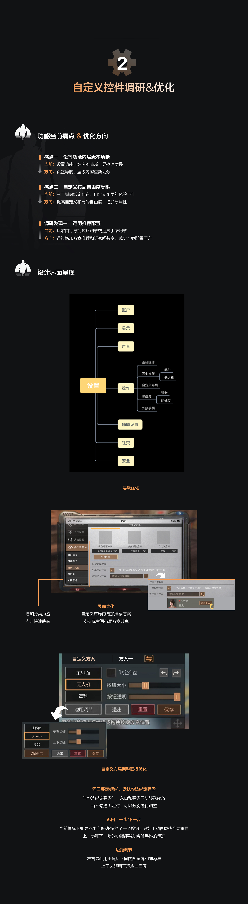
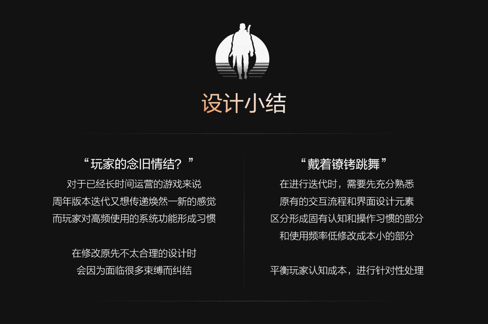
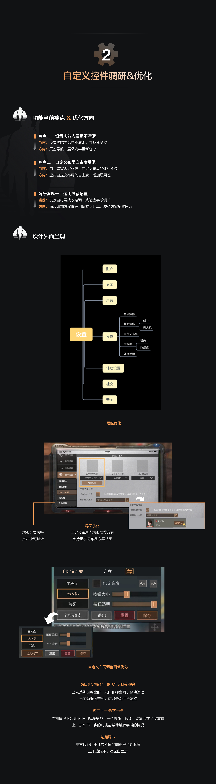
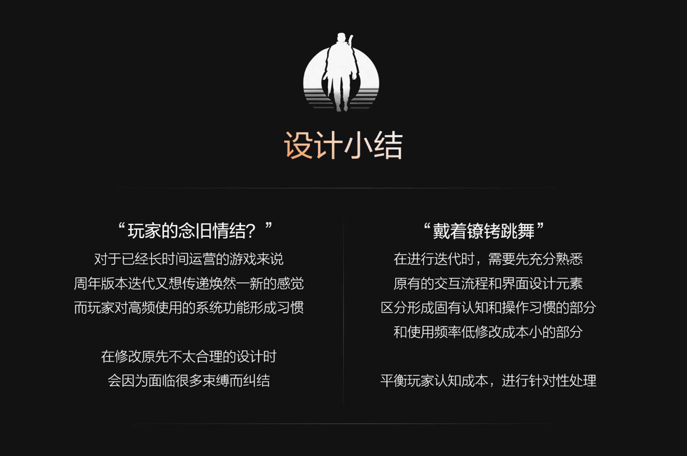
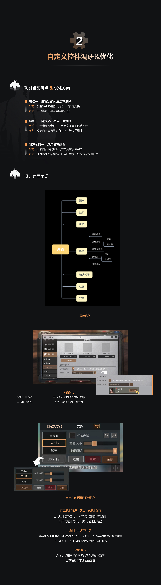
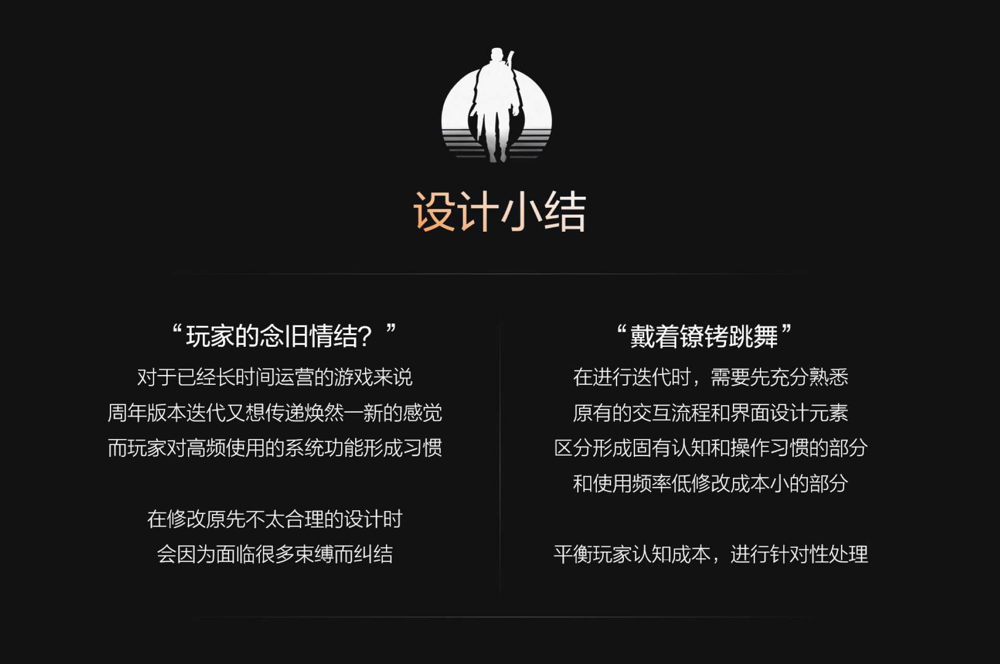

明日之后 | 交互迭代设计
- 实习项目方案
- 2020
实习期间有幸在“明日之后”项目组，参与了两周年大版本交互设计迭代。在体验了一段时间游戏后，我结合自己的游玩过程中遇到的痛点，对于一些存在体验问题的系统功能和控件提出优化迭代的自主需求，希望提升系统UI可用性和延展性。
 

实习期间有幸在“明日之后”项目组，参与了两周年大版本交互设计迭代。在体验了一段时间游戏后，我结合自己的游玩过程中遇到的痛点，对于一些存在体验问题的系统功能和控件提出优化迭代的自主需求，希望提升系统UI可用性和延展性。
